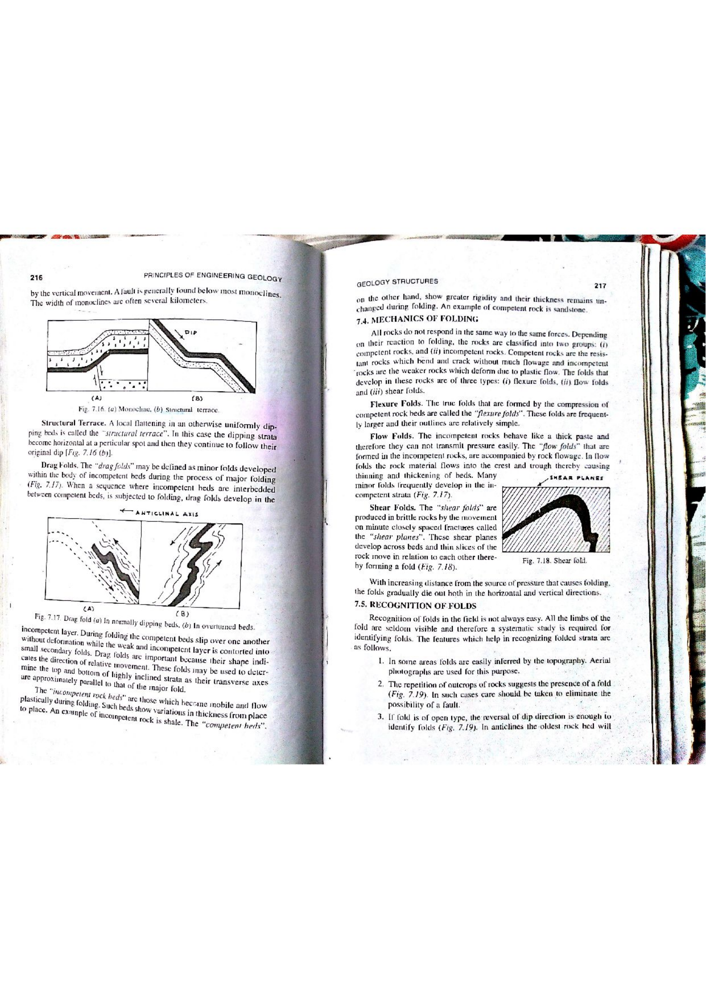

In structural geology and fault mechanics, fault gouge (and finely pulverized rock flour) is an unhardened, non-cohesive or cohesive, fine-grained powder-like rock material produced by mechanical abrasion, frictional grinding, and cataclastic crushing of wall rocks along a fault zone during active fault displacement. Fault gouge and rock flour are definitively produced under brittle deformation regimes in the upper crust.
The structural character of fault rocks changes systematically with crustal depth, governed by the Brittle-Ductile (Frictional-Viscous) Transition (Sibson, 1977; Scholz, 2002):

| Deformation Regime | Primary Mechanism | Foliation Status | Cohesion during Slip | Diagnostic Fault Rock Types |
|---|---|---|---|---|
| Brittle (Elasto-Frictional) Depth: $0 - 5\text{ km}$ |
Cataclasis, frictional grinding, crushing | Random-fabric (Non-foliated) | Incohesive (Loose powder / gravel) | Fault Gouge (Rock Flour), Fault Breccia |
| Brittle (Semi-Brittle) Depth: $5 - 10\text{ km}$ |
Pressure solution, microfracturing | Random-fabric to weakly foliated | Cohesive (Cemented cataclasite) | Cataclasite, Ultracataclasite, Pseudotachylyte |
| Ductile (Quasi-Plastic) Depth: $10 - 20\text{ km}$ |
Dislocation creep, dynamic recrystallization | Strongly Foliated (Mylonitic) | Cohesive (Plastically deformed rock) | Protomylonite, Mylonite, Ultramylonite |
| High-Grade Ductile Depth: $> 20\text{ km}$ |
Diffusional creep, high-T recrystallization | Gneissic banding | Cohesive metamorphic crystalline rock | Blastomylonite, Gneissic shear zone rock |
Fault gouge plays a pivotal role in earthquake physics and petroleum reservoir compartmentalization: